Warning: package 'tidyverse' was built under R version 4.4.2
── Attaching core tidyverse packages ──────────────────────── tidyverse 2.0.0 ──
✔ dplyr 1.1.4 ✔ readr 2.1.5
✔ forcats 1.0.0 ✔ stringr 1.5.1
✔ ggplot2 4.0.0 ✔ tibble 3.2.1
✔ lubridate 1.9.3 ✔ tidyr 1.3.1
✔ purrr 1.0.2
── Conflicts ────────────────────────────────────────── tidyverse_conflicts() ──
✖ dplyr::filter() masks stats::filter()
✖ dplyr::lag() masks stats::lag()
ℹ Use the conflicted package (<http://conflicted.r-lib.org/>) to force all conflicts to become errors
library(nlme)
Attaching package: 'nlme'
The following object is masked from 'package:dplyr':
collapse
library(ggResidpanel)
Warning: package 'ggResidpanel' was built under R version 4.4.3
library(ggeffects)
Warning: package 'ggeffects' was built under R version 4.4.3
Exercise 1: Trunk Flare
Goal: Explore how well diameter at breast height (DBH) predicts trunk flare diameter in trees, and determine whether the relationship differs among species. Specifically, determine whether a GLS model that accounts for non-constant variance provides a better fit than a standard linear model.
Read the data from the trunkfl.csv file.
View the first few lines of data to confirm successful import and examine the structure.
Generalized least squares fit by REML
Model: TF ~ DBH
Data: sub
Log-restricted-likelihood: -128.1955
Coefficients:
(Intercept) DBH
0.08458531 0.37350980
Variance function:
Structure: Power of variance covariate
Formula: ~TF
Parameter estimates:
power
1.16808
Degrees of freedom: 96 total; 94 residual
Residual standard error: 0.09610405
Create diagnostic plots of standardized residuals from the GLS model. Check homogeneity and normality assumptions using residual vs. fitted, QQ plots, and histograms.
Warning: `aes_string()` was deprecated in ggplot2 3.0.0.
ℹ Please use tidy evaluation idioms with `aes()`.
ℹ See also `vignette("ggplot2-in-packages")` for more information.
ℹ The deprecated feature was likely used in the ggResidpanel package.
Please report the issue to the authors.
Warning: Using `size` aesthetic for lines was deprecated in ggplot2 3.4.0.
ℹ Please use `linewidth` instead.
ℹ The deprecated feature was likely used in the ggResidpanel package.
Please report the issue to the authors.
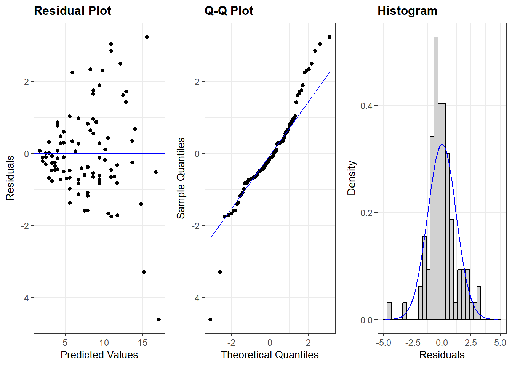
plot(lm_1)
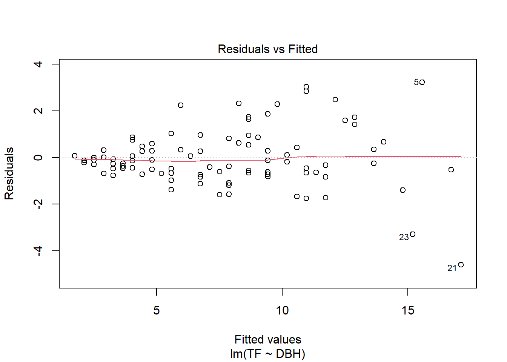
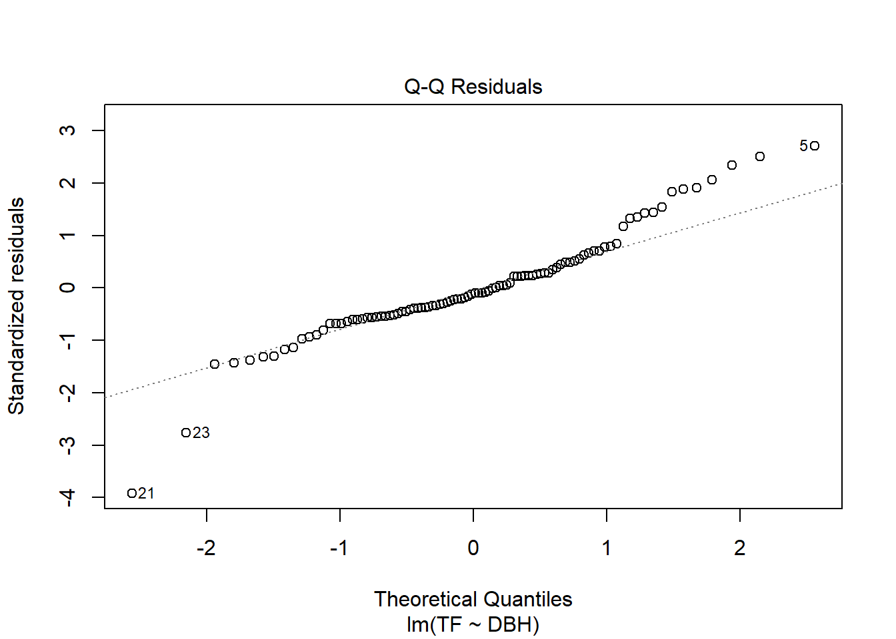
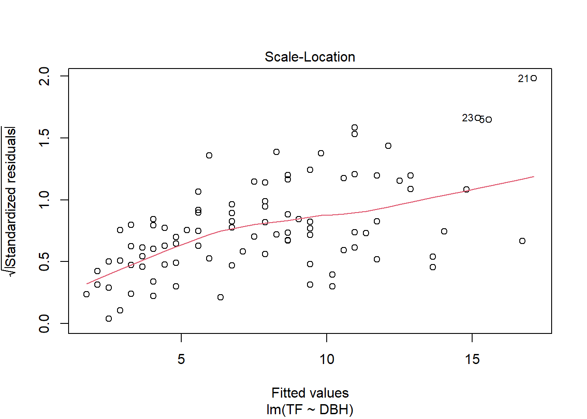
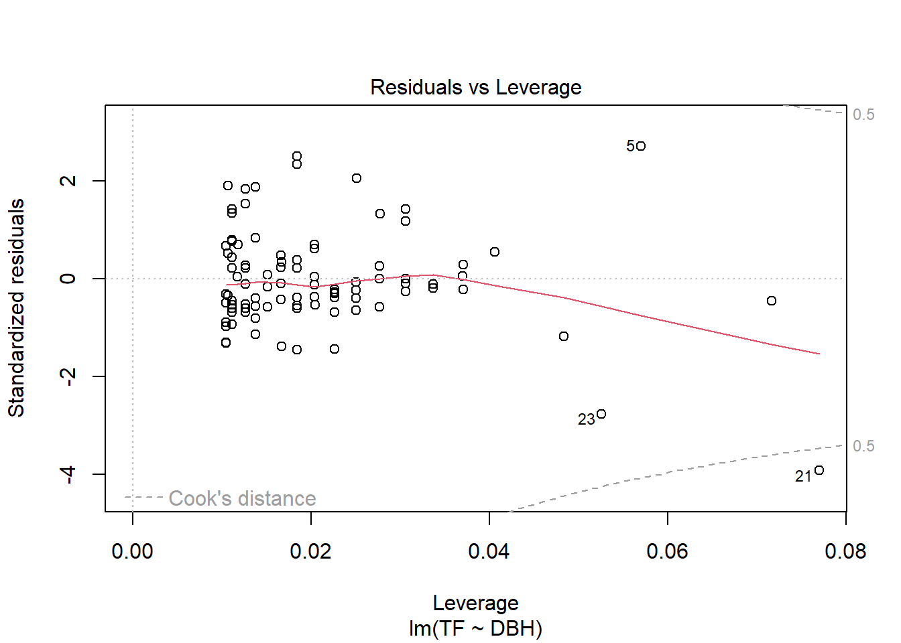
Use AIC to compare models: Which model (LM vs GLS) gives the better fit?
AIC(lm_1, varpow)
Warning in AIC.default(lm_1, varpow): models are not all fitted to the same
number of observations
df AIC
lm_1 3 315.1348
varpow 4 264.3910
The GLS model performs better since the AIC score is lower than the LM model.
Compare parameter estimates and their standard errors between LM and GLS. Do the estimates or inference change?
AIC(lm_1, varpow)
Warning in AIC.default(lm_1, varpow): models are not all fitted to the same
number of observations
df AIC
lm_1 3 315.1348
varpow 4 264.3910
Use the full dataset (all species) to:
Fit a GLS model with the interaction between Species and DBH.
Identify the optimal variance structure.
Identify the optimal fixed effects structure (using AIC and nested model comparison).
Plot the final model and interpret the results.
The full model performs better than the rest based on its lower AIC score
#Fit a GLS model with the interaction between Species and DBH.varpow_2 <-gls(TF ~ Species * DBH, weights =varPower(form =~ Species), data = data_1)varpow_2
Generalized least squares fit by REML
Model: TF ~ Species * DBH
Data: data_1
Log-restricted-likelihood: -1099.768
Coefficients:
(Intercept) Species DBH Species:DBH
-2.23081450 0.70117284 0.52194284 -0.04469972
Variance function:
Structure: Power of variance covariate
Formula: ~Species
Parameter estimates:
power
0.3157765
Degrees of freedom: 619 total; 615 residual
Residual standard error: 0.8462644
#Identify the optimal variance structure.# varIdent: different residual variances per Speciesgls1 <-gls(TF ~ Species * DBH, data = data_1,weights =varIdent(form =~1| Species))# varPower: variance depends on fitted valuesgls2 <-gls(TF ~ Species * DBH, data = data_1,weights =varPower(form =~fitted(.)))# varExp: variance increases exponentially with DBHgls3 <-gls(TF ~ Species * DBH, data = data_1,weights =varExp(form =~ DBH))# varConstPower: flexible power function of DBHgls4 <-gls(TF ~ Species * DBH, data = data_1,weights =varConstPower(form =~ DBH))#Identify the optimal fixed effects structure (using AIC and nested model comparison).gls_full <-gls(TF ~ Species * DBH, data = data_1, weights =varIdent(~1|Species))gls_no_inter <-gls(TF ~ Species + DBH, data = data_1, weights =varIdent(~1|Species))gls_species <-gls(TF ~ Species, data = data_1, weights =varIdent(~1|Species))gls_dbh <-gls(TF ~ DBH, data = data_1, weights =varIdent(~1|Species))# Compare modelsAIC(gls_full, gls_no_inter, gls_species, gls_dbh)
Warning in AIC.default(gls_full, gls_no_inter, gls_species, gls_dbh): models
are not all fitted to the same number of observations
anova(gls_full, gls_no_inter) # Likelihood ratio test for interaction
Warning in nlme::anova.lme(object = gls_full, gls_no_inter): fitted objects
with different fixed effects. REML comparisons are not meaningful.
Model df AIC BIC logLik Test L.Ratio p-value
gls_full 1 5 2232.468 2254.576 -1111.234
gls_no_inter 2 4 2356.720 2374.413 -1174.360 1 vs 2 126.2523 <.0001
##Plot the final model and interpret the results.library(ggplot2)# Create predicted valuesdata_1$pred <-predict(gls_full)ggplot(data_1, aes(x = DBH, y = TF, color = Species)) +geom_point(alpha =0.5) +geom_line(aes(y = pred), size =1) +theme_minimal() +labs(title ="GLS model: TF ~ Species * DBH",y ="TF",x ="DBH")
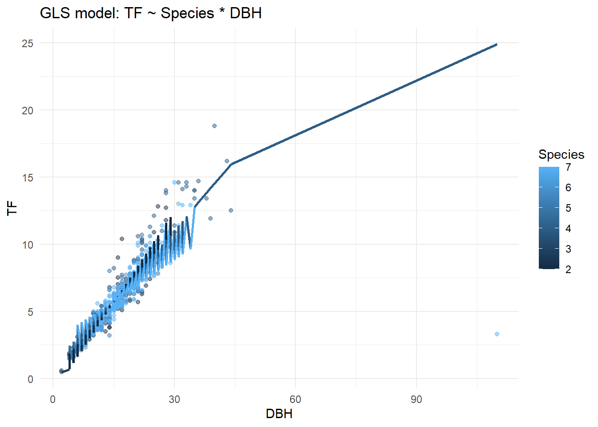
Exercise 2: Benthic Biodiversity
Goal: Evaluate how nutrient concentration in benthic mesocosms is influenced by macrofaunal biomass, enrichment (algae), and nutrient type. Test for and model heteroscedasticity using GLS, and identify the optimal fixed and variance structure for the data. Examine how model results change when a potential outlier is removed.
Read the data from the Biodiversity.csv file.
Check the structure of the dataset and confirm it imported correctly.
Examine residual plots. Is the homogeneity of variance assumption met?
plot(lm_2)
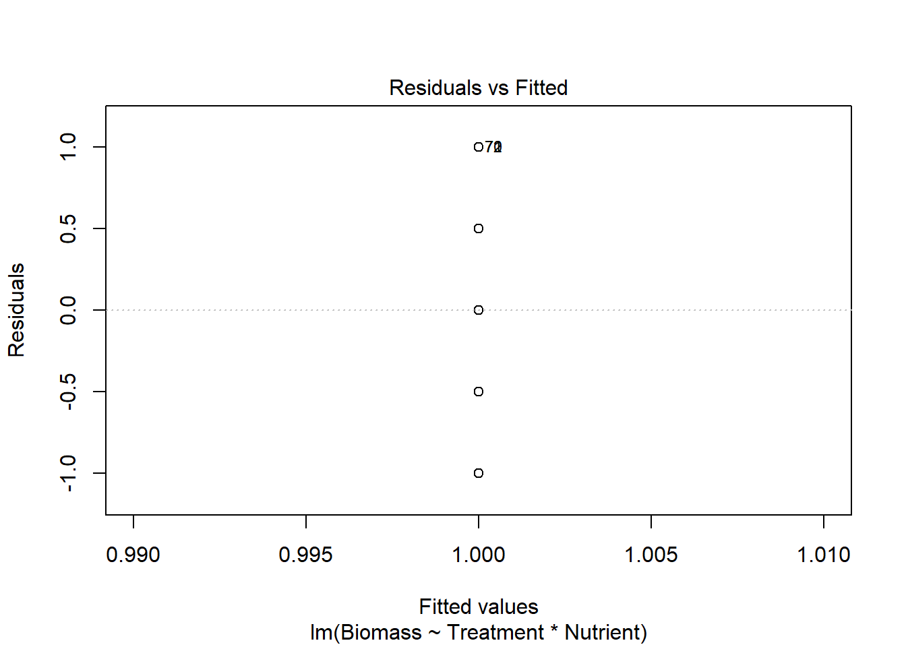
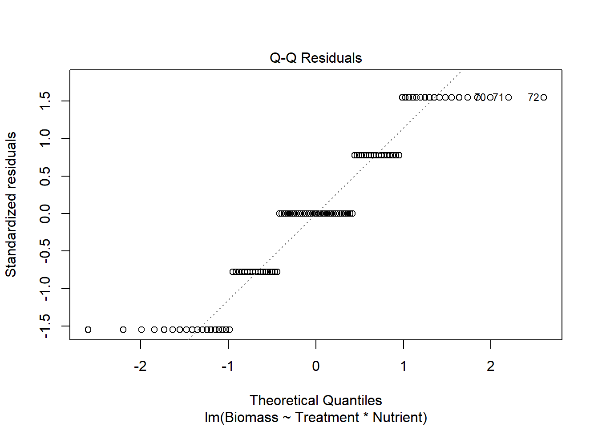
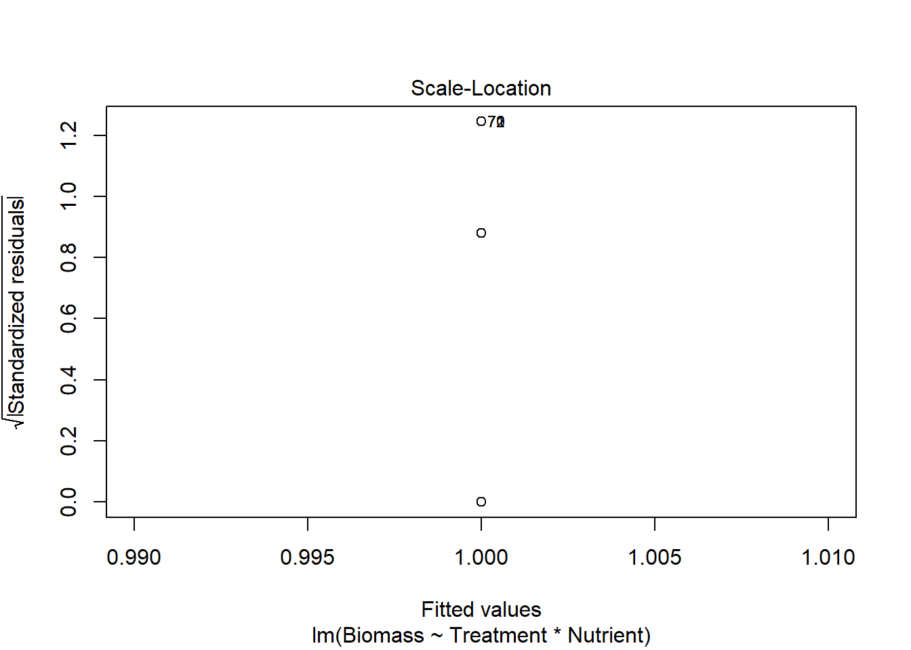
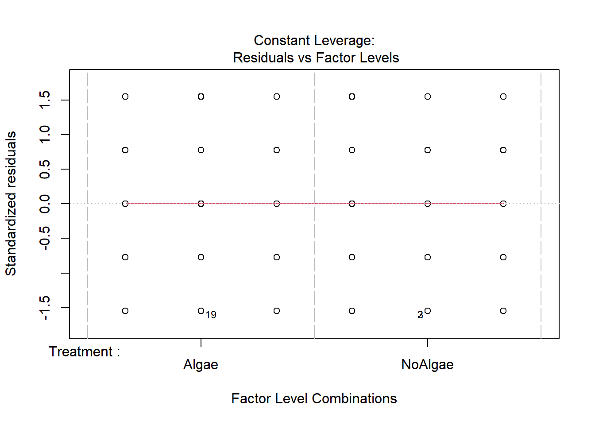
Plot residuals vs predictors (biomass, treatment, nutrient). Which variable(s) may be driving the heterogeneity?
# Extract residuals from the modelresiduals_lm <-residuals(lm_2)# Base R plotspar(mfrow =c(1,3)) # 3 plots in one row# 1. Residuals vs Biomass (not typical since Biomass is response, usually vs fitted values)plot(lm_2$fitted.values, residuals_lm,xlab ="Fitted Biomass",ylab ="Residuals",main ="Residuals vs Fitted")abline(h =0, col ="red", lty =2)# 2. Residuals vs Treatmentplot(data_2$Treatment, residuals_lm,xlab ="Treatment",ylab ="Residuals",main ="Residuals vs Treatment")# 3. Residuals vs Nutrientplot(data_2$Nutrient, residuals_lm,xlab ="Nutrient",ylab ="Residuals",main ="Residuals vs Nutrient")
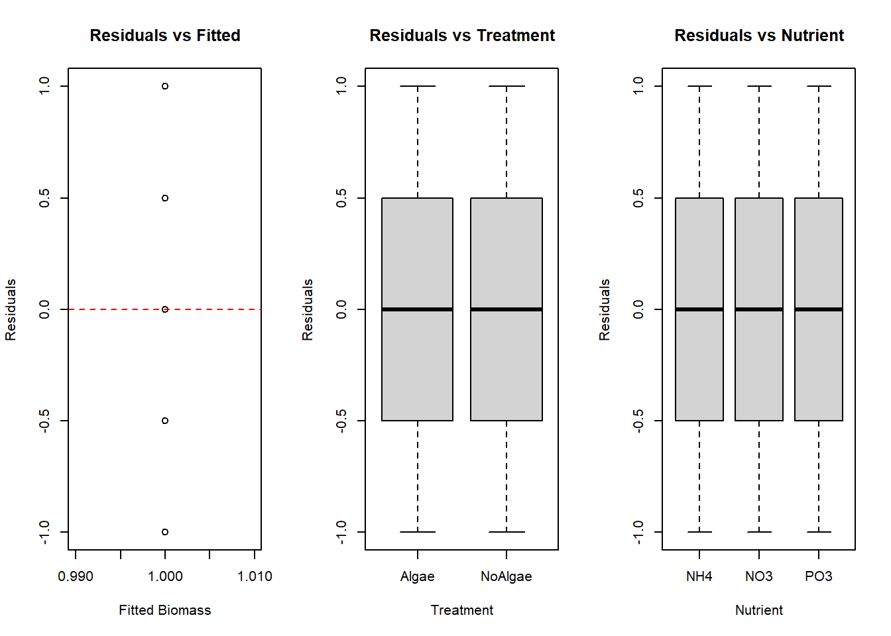
Fit GLS models using different variance structures:
One accounting for treatment.
One accounting for nutrient.
One accounting for both treatment and nutrient interaction.
# 1. GLS model accounting for heterogeneity by Treatmentgls_treat <-gls( Biomass ~ Treatment * Nutrient,data = data_2,weights =varIdent(form =~1| Treatment))# 2. GLS model accounting for heterogeneity by Nutrientgls_nutr <-gls( Biomass ~ Treatment * Nutrient,data = data_2,weights =varIdent(form =~1| Nutrient))# Make sure factors are properly defineddata_2$Treatment <-as.factor(data_2$Treatment)data_2$Nutrient <-as.factor(data_2$Nutrient)# Create an interaction factordata_2$TreatNutr <-interaction(data_2$Treatment, data_2$Nutrient)# GLS model with variance by Treatment:Nutrient interactiongls_inter <-gls( Biomass ~ Treatment * Nutrient,data = data_2,weights =varIdent(form =~1| TreatNutr))
Compare GLS models using anova(). Which model best accounts for heterogeneity? Plot residuals to confirm.
The model that best accounts for heterogeneity is the model with only the treatment since the AIC score is the lowest. The loglikelihood is similar so I judged with AIC
# Compare variance structures with likelihood ratio testsanova(gls_treat, gls_nutr, gls_inter)
Model df AIC BIC logLik Test L.Ratio p-value
gls_treat 1 8 239.338 260.3378 -111.669
gls_nutr 2 9 241.338 264.9628 -111.669 1 vs 2 0 1
gls_inter 3 12 247.338 278.8377 -111.669 2 vs 3 0 1
#plot residual from model with lowest AICplot(gls_treat)
Use ML estimation to test and refine the fixed effects structure:
Test the 3-way interaction.
Drop insignificant two-way interactions one at a time using likelihood ratio tests.
Finalize the fixed effects.
The model without any interaction is the best performing model since the AIC is lower
# Fit full model with ML (required for likelihood ratio tests)gls_full_ML <-gls(Biomass ~ Treatment * Nutrient,data = data_2,weights =varIdent(form =~1| Treatment), # best variance structuremethod ="ML")# Drop 2-way interaction for testinggls_no_inter <-update(gls_full_ML, . ~ . - Treatment:Nutrient)anova(gls_full_ML, gls_no_inter)
Model df AIC BIC logLik Test L.Ratio p-value
gls_full_ML 1 8 227.9401 249.3972 -105.9701
gls_no_inter 2 6 223.9401 240.0329 -105.9701 1 vs 2 1.136868e-13 1
gls_no_inter
Generalized least squares fit by maximum likelihood
Model: Biomass ~ Treatment + Nutrient
Data: data_2
Log-likelihood: -105.97
Coefficients:
(Intercept) TreatmentNoAlgae NutrientNO3 NutrientPO3
1.000000e+00 2.350288e-16 2.219601e-16 3.532708e-16
Variance function:
Structure: Different standard deviations per stratum
Formula: ~1 | Treatment
Parameter estimates:
NoAlgae Algae
1 1
Degrees of freedom: 108 total; 104 residual
Residual standard error: 0.6454972
Fit the final model using REML. Check model assumptions. Identify any influential outliers.
# Refit final model with REMLgls_final <-gls(formula(gls_no_inter), data = data_2, weights =varIdent(form =~1| Treatment), method ="REML")
Summarize and visualize the final model.
summary(gls_final)
Generalized least squares fit by REML
Model: formula(gls_no_inter)
Data: data_2
AIC BIC logLik
234.0619 249.9282 -111.0309
Variance function:
Structure: Different standard deviations per stratum
Formula: ~1 | Treatment
Parameter estimates:
NoAlgae Algae
1 1
Coefficients:
Value Std.Error t-value p-value
(Intercept) 1 0.1265924 7.899367 0
TreatmentNoAlgae 0 0.1265924 0.000000 1
NutrientNO3 0 0.1550434 0.000000 1
NutrientPO3 0 0.1550434 0.000000 1
Correlation:
(Intr) TrtmNA NtrNO3
TreatmentNoAlgae -0.500
NutrientNO3 -0.612 0.000
NutrientPO3 -0.612 0.000 0.500
Standardized residuals:
Min Q1 Med Q3 Max
-1.520234e+00 -7.601170e-01 8.438993e-17 7.601170e-01 1.520234e+00
Residual standard error: 0.6577935
Degrees of freedom: 108 total; 104 residual
plot(gls_final)
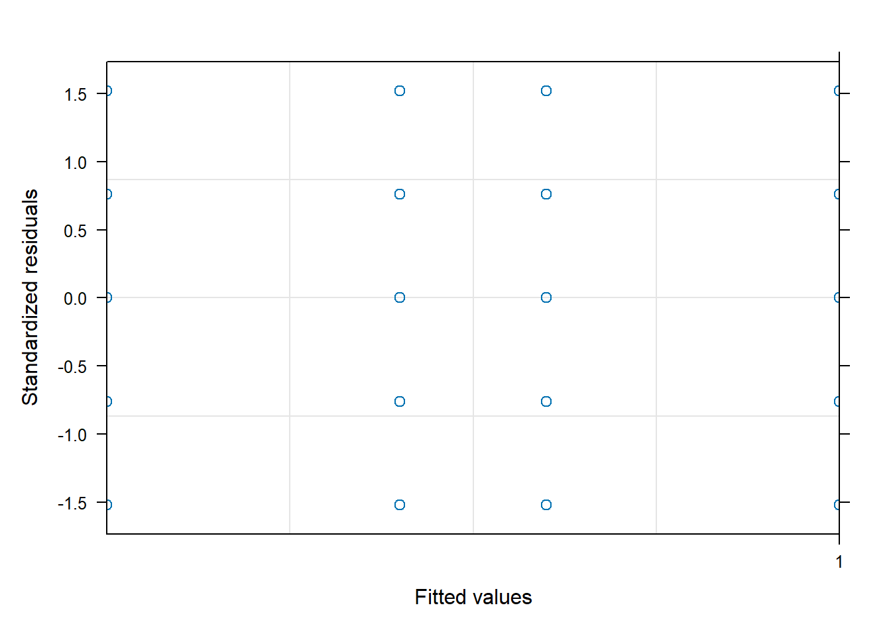
plot(ggpredict(gls_final), show_data=TRUE)
Data points may overlap. Use the `jitter` argument to add some amount of
random variation to the location of data points and avoid overplotting.
Data points may overlap. Use the `jitter` argument to add some amount of
random variation to the location of data points and avoid overplotting.
$Treatment
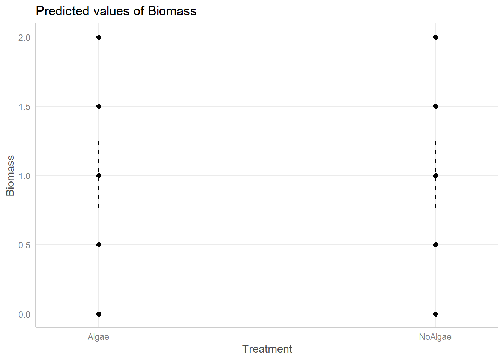
$Nutrient
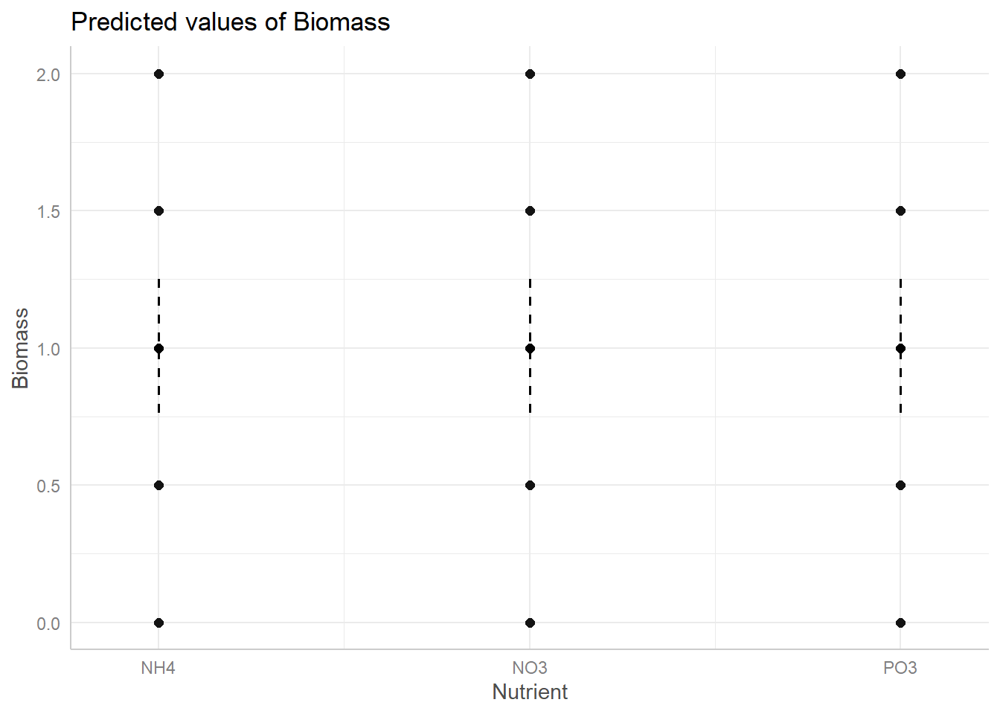
Refit the model without the outlier. Redo model selection and comparison. How do results change?
The AIC reduced when I took out the outlier. The model without interaction is still the better performing model in both situation but the AIC drop after taking out the outlier.
# Standardized residualsresid_std <-resid(gls_final, type ="normalized")# Find the index of the largest absolute residualwhich.max(abs(resid_std))
70
70
##take out the outlierdata_no_outlier <- data_2[-which.max(abs(resid_std)), ]#Refit the model without the outliergls_no_outlier <-gls(Biomass ~ Treatment * Nutrient,data = data_no_outlier,weights =varIdent(form =~1| Treatment),method ="REML")summary(gls_no_outlier)
Data points may overlap. Use the `jitter` argument to add some amount of
random variation to the location of data points and avoid overplotting.
Data points may overlap. Use the `jitter` argument to add some amount of
random variation to the location of data points and avoid overplotting.